Rogerio Bonatti
Member of Technical Staff, Microsoft AI rogeriobonatti at gmail dot comCV / LinkedIn / Publications / Twitter
I'm a Member of Technical Staff at Microsoft AI, where I work on LLM post-training.
Previously I worked at the Applied Sciences Group (ASG), where I develop AI-based experiences for the new Windows Copilot (multi-modal foundational models, computer-using agents, proactive recommendations). I also have deep experience in robotics, where I deployed manipulators, virtual and real embodied agents, and flying robots.
I received my PhD in Robotics from Carnegie Mellon University's School of Computer Science, and interned at Microsoft and Facebook AI Research.
My work has been awarded with a Best Student Paper Finalist Nomination (IROS 2020), a Microsoft Research Dissertation Grant, a Siebel Scholarship and a Swartz Entrepreneurship Fellowship. Before CMU I studied Mechatronics Engineering at the University of São Paulo, Brazil and also had an amazing experience in management consulting at McKinsey & Co..
Selected News
• Sept 2024 Released Windows Agent Arena, a new benchmarking tool for computer-using agents 🤖 • Jan 2024 Paper accepted at ICRA 24 • Aug 2023 Papers accepted at ICCV 23 and IROS 23! • Feb 2023 Released our blog post on ChatGPT for robotics! • Jan 2023 Workshop proposal accepted to ICRA 23! Pretraining for Robotics • Jan 2023 Papers accepted at ICLR 23 (notable top 25%) and ICRA 23 • June 2022 One paper accepted at IROS 2022 • May 2022 Invited to give research talks at the Air Force Research Lab and at the Automate Show • July 2021 Defended my PhD thesis and now joined Microsoft as a Senior Researcher • June 2021 One paper accepted at IROS 2021 • March 2021 Two papers accepted at ICRA 2021 • Sept 2020 Our paper on cross-modal representations for drone racing is a finalist for the Best Student Paper Award at IROS 2020 (3 out of 2996 submissions) • Sept 2020 Honored to become a Siebel Scholar, class of 2021!
Publications
-
Conferences and Journals
|
Windows Agent Arena: Evaluating Multi-Modal OS Agents at Scale Rogerio Bonatti, Dan Zhao, Francesco Bonacci, Dillon Dupont, Sara Abdali, Yinheng Li, Justin Wagle, Kazuhito Koishida, Arthur Bucker, Lawrence Jang, Zack Hui ICML, 2025 [PDF] [Video] [Webpage] [Code] |
|
Videowebarena: Evaluating long context multimodal agents with video understanding web tasks Lawrence Jang, Yinheng Li, Dan Zhao, Charles Ding, Justin Lin, Paul Pu Liang, Rogerio Bonatti, Kazuhito Koishida ICLR, 2025 [PDF] [Webpage] [Code] |
|
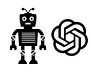 |
ChatGPT for Robotics: Design Principles and Model Abilities Sai Vemprala*, Rogerio Bonatti*, Arthur Bucker, Ashish Kapoor *Equal contribution, random order IEEE Access, 2024 [PDF] [Video] [Webpage] [Code] |
|
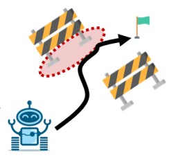 |
ConBaT: Control Barrier Transformer for Safety-Critical Policy Learning Yue Meng, Sai Vemprala, Rogerio Bonatti, Chuchu Fan, Ashish Kapoor International Conference on Robotics and Automation (ICRA), 2024 [PDF] |
|
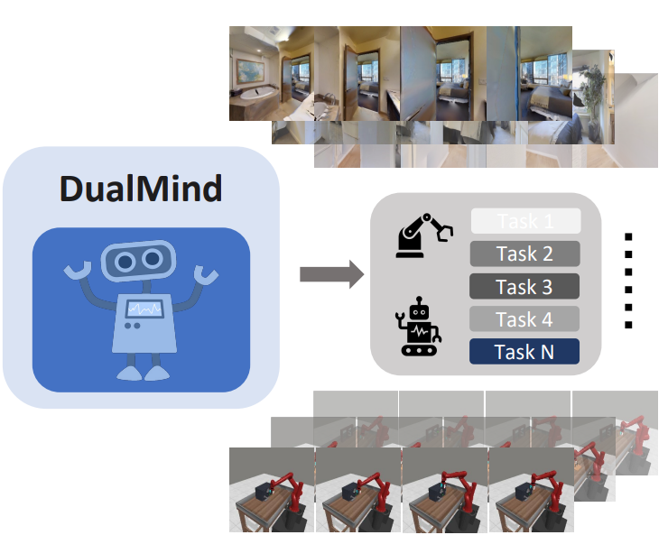 |
Is Imitation All You Need? Generalized Decision-Making with Dual-Phase Training Yao Wei, Yanchao Sun, Ruijie Zheng, Sai Vemprala, Rogerio Bonatti, Shuhang Chen, Ratnesh Madaan, Zhongjie Ba, Ashish Kapoor, Shuang Ma. International Conference on Computer Vision (ICCV), 2023 [PDF] [Webpage/Code] |
|
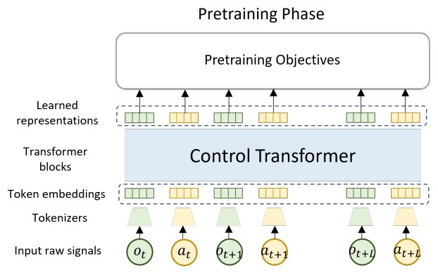 |
SMART: Self-supervised Multi-task pretrAining with contRol Transformers Yanchao Sun, Shuang Ma, Ratnesh Madaan, Rogerio Bonatti, Furong Huang, Ashish Kapoor International Conference on Learning Representations (ICLR), 2023 Notable paper (top 25%) [PDF] |
|
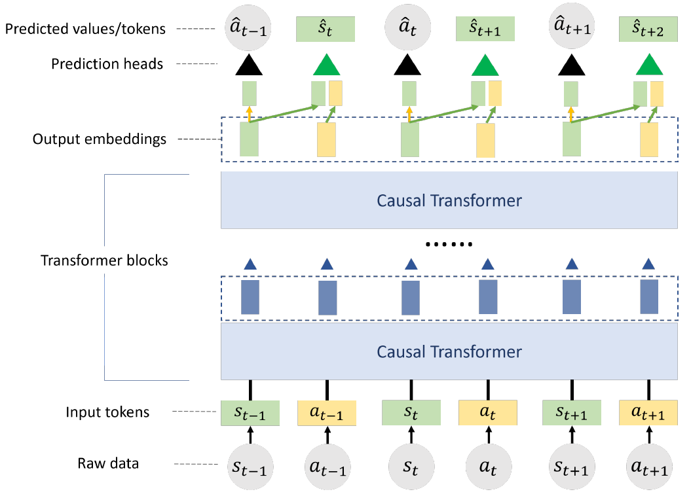 |
PACT: Perception-Action Causal Transformer for Autoregressive Robotics Pre-Training Rogerio Bonatti, Sai Vemprala, Shuang Ma, Felipe Vieira Frujeri, Ashish Kapoor International Conference on Intelligent Robots and Systems (IROS), 2023 [PDF] [Video] [Webpage] [Code] |
|
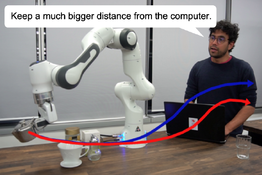 |
LaTTe: Language Trajectory TransformEr Arthur Bucker, Luis Figueredo, Sami Haddadin, Ashish Kapoor, Shuang Ma, Sai Vemprala, Rogerio Bonatti International Conference on Robotics and Automation (ICRA), 2023 [PDF] [Webpage] [Video] |

|
Reshaping Robot Trajectories Using Natural Language Commands: A Study of Multi-Modal Data Alignment Using Transformers Arthur Bucker, Luis Figueredo, Sami Haddadin, Ashish Kapoor, Shuang Ma, R. Bonatti International Conference on Intelligent Robots and Systems (IROS), 2022 [PDF] [Webpage] [Video] |
|
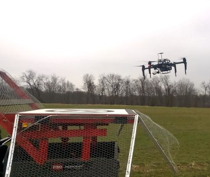 |
Visual Servoing Approach to Autonomous UAV Landing on a Moving Vehicle Azarakhsh Keipour, Guilherme AS Pereira, Rogerio Bonatti, Rohit Garg, Puru Rastogi, Geetesh Dubey, Sebastian Scherer Sensors, 2022 [PDF] |
|
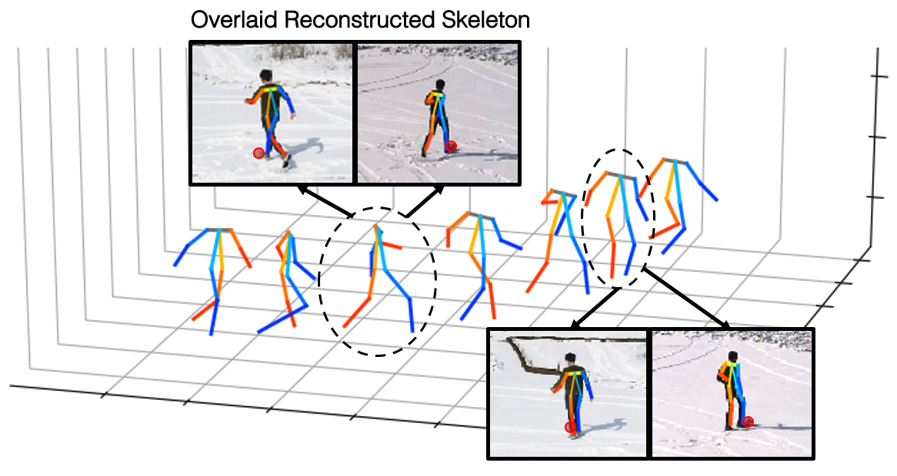 |
3D Human Reconstruction in the Wild with Collaborative Aerial Cameras Cherie Ho, Andrew Yong, Harry Freeman, Rohan Rao, R. Bonatti, Sebastian Scherer International Conference on Intelligent Robots and Systems (IROS), 2021 [PDF] [Video] |
|
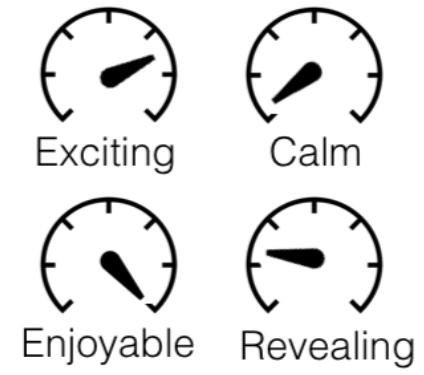 |
Batteries, camera, action! Learning a semantic control space for expressive robot cinematography
R. Bonatti, Arthur Bucker, Sebastian Scherer, Mustafa Mukadam, Jessica Hodgins International Conference on Robotics and Automation (ICRA), 2021 [PDF] [Video] |
|
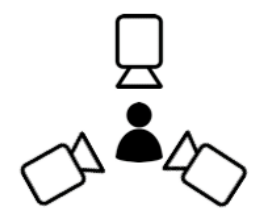 |
Do you See What I See? Coordinating Multiple Aerial Cameras for Robot Cinematography
Arthur Bucker, R. Bonatti, Sebastian Scherer International Conference on Robotics and Automation (ICRA), 2021 [PDF] [Video] |
|
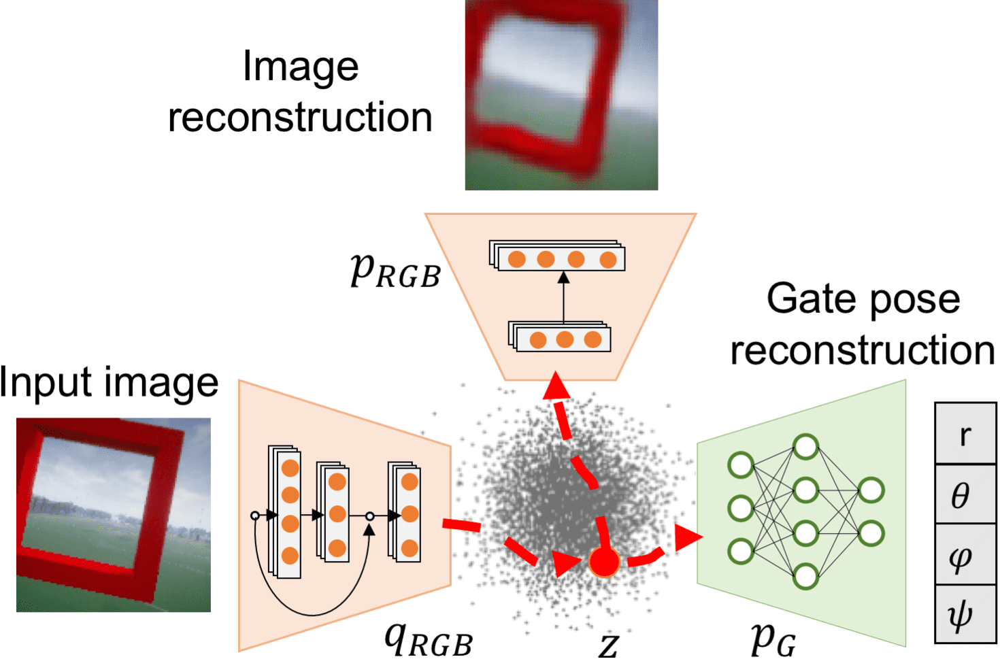 |
Learning Visuomotor Policies for Aerial Navigation Using Cross-Modal Representations
R. Bonatti, Ratnesh Madaan, Vibhav Vineet, Sebastian Scherer, Ashish Kapoor International Conference on Intelligent Robots and Systems (IROS), 2020 Best Student Paper Finalist (3 out of 2996 submissions) [PDF] [Video] [Oral] [Code] |
|
Autonomous aerial cinematography in unstructured environments with learned artistic decision‐making
R. Bonatti, Wenshan Wang, Cherie Ho, Aayush Ahuja, Mirko Gschwindt, Efe Camci, Erdal Kayacan, Sanjiban Choudhury, Sebastian Scherer Journal of Field Robotics (JFR), 2020 [Link] [PDF] [Video] |
|
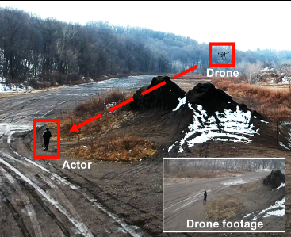 |
Towards a Robust Aerial Cinematography Platform: Localizing and Tracking Moving Targets in Unstructured Environments
R. Bonatti, Cherie Ho, Wenshan Wang, Sanjiban Choudhury, Sebastian Scherer International Conference on Intelligent Robots and Systems (IROS), 2019 [PDF] [Video] |
|
Can a Robot Become a Movie Director? Learning Artistic Principles for Aerial Cinematography
Mirko Gschwindt, Efe Camci, R. Bonatti, Wenshan Wang, Sebastian Scherer International Conference on Intelligent Robots and Systems (IROS), 2019 [PDF] [Video] |
|
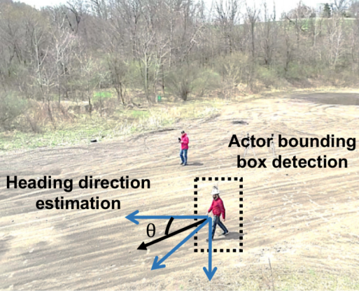 |
Improved Generalization of Heading Direction Estimation for Aerial Filming Using Semi-supervised Regression
Wenshan Wang, Aayush Ahuja, Yanfu Zhang, R. Bonatti, Sebastian Scherer International Conference on Robotics and Automation (ICRA), 2019 [PDF] [Video] |
|
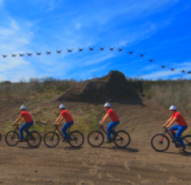 |
Autonomous drone cinematographer: Using artistic principles to create smooth, safe, occlusion-free trajectories for aerial filming
R. Bonatti, Yanfu Zhang, Sanjiban Choudhury, Wenshan Wang, Sebastian Scherer International Symposium on Experimental Robotics (ISER), 2018 [PDF] [Video 1] [Video 2] [Video 3] |
|
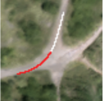 |
Integrating kinematics and environment context into deep inverse reinforcement learning for predicting off-road vehicle trajectories
Yanfu Zhang, Weshan Wang, R. Bonatti, Daniel Maturana, Sebastian Scherer Conference on Robot Learning (CoRL), 2018 [PDF] [Video] |
|
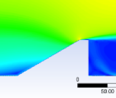 |
Influence of Building Geometry on Wind Power Potential
Mikhail Yakhnis, R. Bonatti, Ryan Gryszko, and Chinaso Obiejesi American Institute of Aeronautics and Astronautics (AIAA), 2014 [PDF] |
|
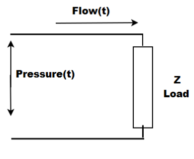 |
Design and Characterization of a Volume-Cycled Small Animal Mechanical Ventilator Coupled with a Respiratory System Model
R. Bonatti, Andrea F. Cruz, and Henrique T. Moriya VI Latin American Congress on Biomedical Engineering (CLAIB), 2014 [PDF] |
Theses
|
Active Vision: Autonomous Aerial Cinematography with Learned Artistic Decision-Making
R. Bonatti PhD Thesis at Carnegie Mellon University, School of Computer Science, 2021 [PDF] |
|
Development of Email Classifier in Brazilian Portuguese Using Feature Selection for Automatic Response
R. Bonatti, Arthur G. de Paula Senior Thesis at University of São Paulo, Dept. of Mechatronic Engineering, 2015 [PDF] |
Education
Ph.D., Robotics
Carnegie Mellon University, Robotics Institute
Pittsburgh, PA
Research Advisor: Prof. Sebastian Scherer
Thesis Committee:
Sebastian Scherer,
Jessica Hodgins,
Oliver Kroemer,
Ashish Kapoor,
Nathan Ratliff
B.S., Mechatronics Engineering - Robotics
University of São Paulo, Polytechnic School
São Paulo, Brazil GPA: 8.7/10, non-curved, top 3/800 Senior Thesis: Development of email classifier in Brazilian Portuguese for automatic response Research Advisor: Prof. Fabio Cozman
Study abroad, Mechanical Engineering
Cornell University, College of Engineering
Ithaca, NY GPA: 4.08 / 4.30 One-year study program. Full scholarship by Brazil's Ministry of Education Research Advisor: Prof. Ephrahim Garcia
Awards and honors
• 2020: Best Student Paper Finalist, IROS 2020 • 2020: Siebel Scholarship, class of 2021 ($35,000) • 2020: Microsoft Research Dissertation Grant ($25,000) • 2019: James R. Swartz Entrepreneurial Fellowship • 2017-2019: Travel awards: RSS’17, ISER’18, IROS’19, CMU Provost • 2017: CMU School of Computer Science Technology and Entertainment Proposal for Autonomous Drone Cinematographer ($60,000) • 2014-2016: Fundacão Estudar Merit Scholarship for outstanding trajectory and academic potential, 28 recipients out of 31,000+ applicants (~$10,000) • 2012-2014: The State of São Paulo Research Foundation (FAPESP) scholarship for undergraduate research (~$3,000) • 2013: Dean's List, Cornell University • 2013: Full scholarship from Brazil's Ministry of Education for one-year study program at Cornell University, College of Engineering (~$75,000) • 2011: Entered the Polytechnic School of the University of São Paulo in 3rd/10,600 applicants • 2011: "PACE Course Competition Engineering Design Graphics", 2nd place, sponsored by GM, Autodesk, HP, Oracle, Siemens • 2010: High school valedictorian - Colegio Visconde de Porto Seguro, São Paulo, Brazil • 2010: Gold Medal, Brazilian Physics Olympiad, OBF (top 20 from over 50,000 competitors)
Work Experience
Microsoft AI
Senior Researcher, Applied Sciences Group
• Developing AI-based experiences for the new Windows Copilot • Focused on user understanding, proactive recommendations, and decision-making • Training large language models (LLMs), computer vision models, and generative AI tools • In the process of submitting 2 patent applications
Microsoft Research
Senior Researcher, Autonomous Systems and Robotics Research Group
• Developed multi-modal foundational models for robotics and decision-making. My research focus was to create generative machine learning models that fuse language, vision, and geometrical features to allow autonomous agents to take actions in the real world. • Conference publications at ICCV, ICLR, ICRA, IROS, and workshop organizer at ICRA 23
Facebook AI Research
Research Intern
• Worked with Jessica Hodgins and Mustafa Mukadam on learning a manifold of movie emotion descrip- tors, and a generative model to automatically execute distinct styles for autonomous drone cameras.
Microsoft Research
Research Intern
• Worked on imitation learning and sim-to-real transfer of deep control policies with Ashish Kapoor, Vibhav Vineet on learning efficient state representations for imitation learning that can generalize across simulation and real-life data
McKinsey & Co.
Business Analyst Intern
• Worked as a generatist consultant on Supply Chain, Logistics, Purchasing, and Commercial Policy Transformation across multiple industries
Itaú BBA
Winter Intern, Cost Optimization and Estimation Team
• Itaú BBA is Latin America's largest corporate investment bank, in a holding with $85B market cap
Amgen Inc.
Summer Intern, Global Strategic Sourcing, Finance and Strategy Team
• Amgen is the largest biotech company in the world with $18.7B in sales in 2013 • Developed and applied statistical analysis to a marketing bench-marking database leading to an estimated 4x increase in savings ($8M) and 60% decrease (4 months) in the time required to perform data analysis
Media

Web designing: I designed the website of Bonavision, a company that produces equipment for visually impaired people:
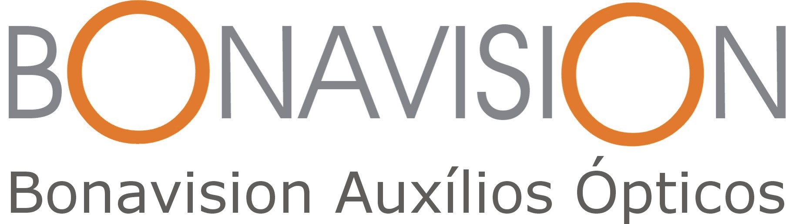
Bonavision Auxilios Opticos
bonavision.com.brContact
rogeriobonatti at gmail dot com